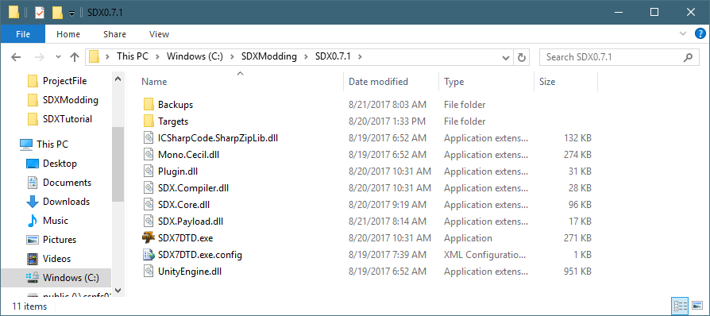
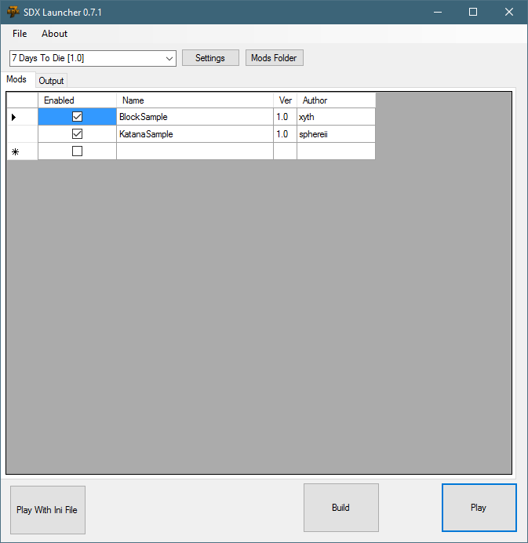

The SDX7DTD.exe is the GUI front end of the SDX Tool, and will be used to compile the mods.
In the "C:\SDXModding\SDX0.7.1\" folder, double click on SDX7DTD.exe

Once loaded, you'll see this screen:

Created with the Personal Edition of HelpNDoc: Create help files for the Qt Help Framework